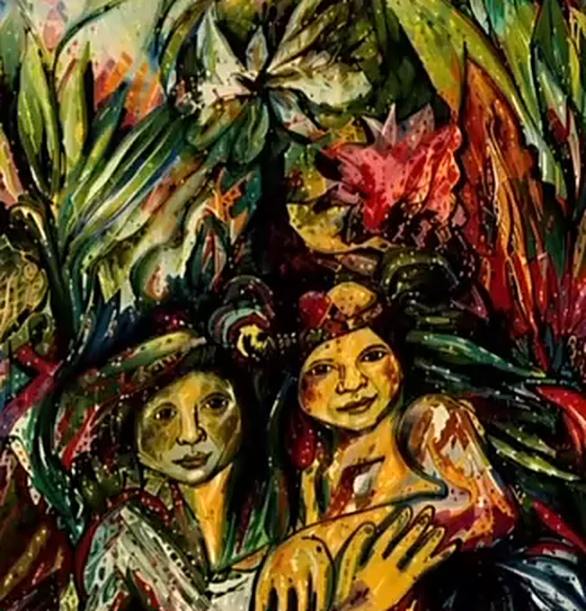

Über mich
Über mich, ganz persönlich
Ich bin Katharina, Mutter von drei erwachsenen Kindern. Mein Leben ist reich an Erfahrungen, und jede einzelne hat mich wachsen lassen.

Erkrankungen in meiner Familie haben mich früh dazu gebracht, mich mit seelischer Gesundheit und den tieferen Zusammenhängen menschlichen Erlebens zu beschäftigen. Jahrzehnte pädagogischer Arbeit, viele davon im integrativen Bereich, haben meinen Blick auf familiäre Prägungen geschärft.
Ich kenne Krisen aus eigener Erfahrung. Sie haben mich gezwungen innezuhalten und mich auf eine tiefe Auseinandersetzung mit mir selbst einzulassen. Mein Weg führte mich zu C. G. Jung, zur Schattenarbeit und zu der Erkenntnis: Veränderung beginnt dort, wo wir bereit sind, auch unseren verborgenen Anteilen zu begegnen.
Wir sind mehr als unsere Diagnose. Und mehr als unsere Geschichte.

Psychologie und Psychotherapie haben mich viel gelehrt und mir gezeigt, wo Verstehen allein nicht ausreicht. In der Tanz- und Ausdrucksarbeit habe ich erlebt, wie Lebensthemen durch Bewegung und kreativen Ausdruck in Fluss kommen.
Die indigene Energiearbeit der Anden und des Amazonas wurde zur tiefsten Wegmarke meines Lebens. Ich bin dankbar, die Munay-Ki-Riten und ihre Initiationen empfangen zu haben. Sie geben mir Kraft und Verbundenheit für meine Arbeit.
Ich bin eine Reisende, offen, neugierig und bereit, weiterzulernen.
Meine Haltung
Heilung ist eine Reise, keine Intervention.
Niemand kann Veränderung für einen anderen Menschen machen. Aus der schamanischen Haltung heraus sehe ich mich als Wegbegleiterin auf deiner persönlichen Reise. Ich ermutige dich, ehrlich hinzusehen und Ja zu sagen zu dem, was auftaucht.
Alles, was bewusst wird, verliert die Macht über uns.
Wie die Passionsblume sich Schicht für Schicht öffnet, entfaltet sich auch Veränderung in ihrem eigenen Rhythmus. Von innen heraus.

Aus dem Atelier
Von der Fantasie zur Brücke
Rückblickend erkenne ich: Hier entstand eine Brücke.
Als ich dem Vater meiner Kinder begegnete, der aus Peru stammt, kam ich in Berührung mit den Festen Perus. Mit der Musik, den Tänzen, den Farben und einer tiefen, ursprünglichen Spiritualität. Und ich begann zu malen.
Diese Arbeit ist kein Zufall. Sie ist eine natürliche Fortsetzung dessen, was immer schon da war.

Die Tradition
In der Linie der Q’ero
Meine Arbeit steht in der Tradition der Q’ero, wie sie durch Alberto Villoldo und The Four Winds Society in die westliche Welt gebracht wurde. Die Mesa, mein gewebter, tragbarer Altar mit den Kuyas, den Steinen der Kraft, ist Bestandteil jeder Begleitung.